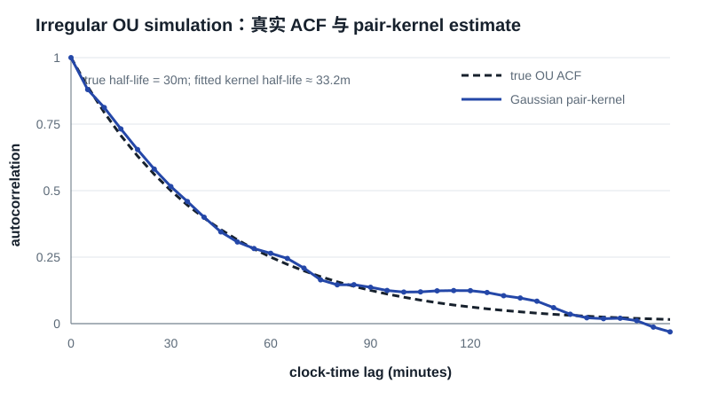
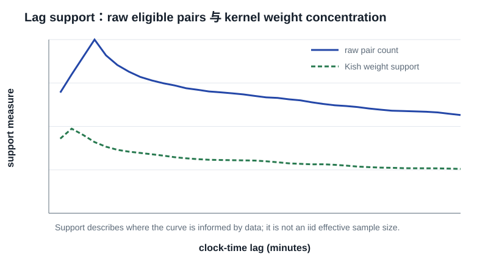

最简单的 mean-reverting model 是
\[dX_t=-\lambda X_t\,dt+\sigma\,dW_t,\qquad \lambda>0,\]
stationary ACF 为
\[\rho_c(\tau)=e^{-\lambda|\tau|}.\]
任意 irregular interval \(\Delta_j=t_j-t_{j-1}\) 上的 exact transition 是
\[X_{t_j}=e^{-\lambda\Delta_j}X_{t_{j-1}}+\eta_j,\qquad \operatorname{Var}(\eta_j)=\frac{\sigma^2}{2\lambda}\left(1-e^{-2\lambda\Delta_j}\right).\]
所以不需要 resample。常用摘要是 \(\tau_{1/2}=\log 2/\lambda\)。
Irregular autoregressive model 可写成
\[y_{t_j}=\phi^{\Delta_j}y_{t_{j-1}}+\sigma\sqrt{1-\phi^{2\Delta_j}}\,\varepsilon_{t_j},\qquad 0<\phi<1,\]
从而 \(\rho_c(\tau)=\phi^\tau\)。令 \(\phi=e^{-\lambda}\) 即与 OU decay 对应。IAR 的价值在于给出能直接处理 irregular gaps 的 likelihood 与 residual-checking framework。
若经验 ACF 有负相关、振荡、先快降后长尾，或不同 regime 有不同 decay，单指数太僵硬。可考虑 two-scale decay
\[\rho(\tau)=a_1e^{-\lambda_1\tau}+a_2e^{-\lambda_2\tau},\]
或 CARMA/state-space model。参数模型用结构假设换取 gap interpolation、unsupported-lag extrapolation 与低维 summary；因此先画 nonparametric curve 和 support，再决定模型是否可信。
10:00 有 observation、下一笔在 13:00 时，1-minute forward fill 会生成 179 个相同伪值。普通 ACF 看到长平台，自然产生很高的短 lag correlation。只有当研究对象本身就是“最新可见状态”——例如持有到下一次更新的 displayed quote state——last observation carried forward 才可能符合 estimand。
Linear interpolation 假定 gap 内沿直线变化；spline 假定更强 smoothness。gap 与 process time scale 同量级时，插值规则本身会决定 ACF。DCF 的出发点就是只在真实 measured pairs 支持的 lag 上估计；Rehfeld et al. 的 benchmark 也显示高度 irregular 时 interpolation 会把 persistence 往上推。
报告模拟 stationary OU：5,000 个 observations，真实 half-life 30 分钟；gap median 2.42 分钟、mean 9.44 分钟、95% quantile 37.54 分钟，并加入 session-like long gaps。

| quantity | value |
|---|---|
| true ρ(5m) | 0.891 |
| Gaussian-kernel estimate | 0.880 |
| 1-minute forward-fill ACF | 0.934 |
| true / fitted half-life | 30.0 / 33.2 min |
| empirical event-lag-1 | 0.873 |
| E[exp(−λΔ)] | 0.876 |
| exp(−λEΔ) | 0.804 |
这个实验展示三点：event lag 1 不等于 mean-gap clock lag；forward fill 可机械抬高短 lag correlation；每个 lag 的 empirical support 不同。

同一个 observation 会进入许多 pair products。独立重采样 pairs 会破坏 dependence graph，通常低估 uncertainty。多条短 series 可按整条 series bootstrap；sessions 可按 session 或 clock-time blocks；bond panel 同时有 CUSIP persistence 与 date common shock 时应考虑 date block、multiway cluster 或 multiplier bootstrap；一条长 series 则用 moving/stationary block bootstrap，并在每次重采样后重新构造 pairs。
逐 lag bootstrap quantiles 只是 pointwise intervals。若同时扫描许多 lags 并问“是否任何一点显著”，需要 max-t 或 sup-norm bootstrap，否则有 multiple-comparison inflation。
合法 stationary covariance 必须对任意时间点集合生成 positive-semidefinite matrix。逐 lag smoothing 即使每点在 [−1,1]，整体也未必 PSD。用于 residual diagnostic 通常可以；用于 GLS、GP 或 likelihood covariance matrix 时，应拟合或投影到 OU、Matérn、CARMA 或 nonnegative-spectrum family。
若 mean、variance 或 dependence 随时间变化，对象变成
\[\rho(t,\tau)=\operatorname{Corr}\{X(t),X(t+\tau)\}.\]
交易 residual 常有 time-of-day、rating/sector/tenor、market regime、model version、side 与 quantity heterogeneity。至少先用 conditional mean/scale 得到 \(z_i=(e_i-\widehat\mu_i)/\widehat\sigma_i\)，并在 dependence 随 regime 变化时分层估计。